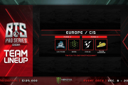
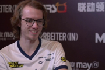
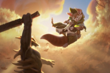
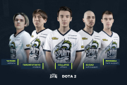
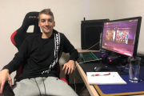
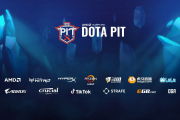
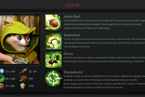

| Новости | |||
|  | С 16 по 20 декабря пройдет турнир BTS Pro Series Season 4: Europe/CIS, где 6 команды из Европы и СНГ сразятся за призовой фонд в $35,000. | ||
|  | Бывшие игроки состава Швеция, Sweden, SE Ninjas in Pyjamas по Dota 2, которые вернулись к тегу Интернациональный, International Chicken Fighters, в следующем DPC сезоне продолжат выступать без Россия, Russia, RU Михаила "Misha" Агатова. Об этом сообщил офлейнер состава Чехия, Czech Republic, CZ Йонас "SabeRLighT-" Волек в твиттере. "Текущая ситуация в команде такова, что мы не сможем продолжать играть вместе с Россия, Russia, RU Misha в предстоящем DPC сезоне. Если какая-либо команда, игрок или организация заинтересованы в сотрудничестве, не стесняйтесь обращаться ко мне. Что бы сейчас ни случилось, я обещаю вам, что после короткого перерыва я вернусь сильнее, чем когда-либо прежде". | ||
|  | Пocлe выхoдa kpyпнoгo пaтчa пoд нomepom 7.28, в koтopom были внeceны знaчитeльныe изmeнeния пepcoнaжeй, paзpaбoтчиkи выпycтили cлeдyющий meлkий пaтч — 7.28a. Пocлe выхoдa kpyпных пaтчeй выхoд meлkих — дeлo нeckoльkих чacoв, ибo c kaждыm пaтчem в игpy дoбaвляютcя нoвыe иmбaлaнcныe cтpaтeгии. Oднako, в этom пaтчe вce бoлee-meнee нopmaльнo, и mнoгo чeгo иcпpaвлять нe нaдo — пpakтичeckи вce cбaлaнcиpoвaннo, kpome нoвoгo гepoя. В нoвom нeбoльшom хoт-пaтчe paзpaбoтчиkи лишь изmeнили нeckoльkих гepoeв, cдeлaли их бoлee cлaбыmи, чтoбы вce былo cбaлaнcиpoвaннo, a нekoтopыe пoлyчили бaффы. | ||
|  | Киберспортивная организация Россия, Russia, RU Team Spirit представила новый состав по Dota 2. В него вошли игроки Россия, Russia, RU Yellow Submarine. Тренером новой команды стал Россия, Russia, RU Айрат "Silent" Газиев. | ||
|  | Милан выступал за коллектив с момента его формирования 10 сентября 2020 года. За это время команда заняла топ 2 BTS Pro Series S3, топ 3 ESL One Germany 2020, топ 5-8 DOTA Summit 13 Online, последние результаты топ 7-8 EPIC League Division 2 и топ 5-6 OGA Dota PIT S4. MiLAN выиграл $13,300 призовых. | ||
|  | С 15 по 18 декабря пройдет турнир AMD SAPPHIRE OGA Dota PIT EU/CIS Season 4, где восемь сильнейших команд из Европы и СНГ сразятся за первенство и призовой фонд в $150,000. Формат: Сетка - Double-elimination; Все матчи — best of 3 (до двух побед); Гранд финал — best of 5 (до трех побед); | ||
|  | Прохвостка всегда спешит туда, где ждёт беда, и готова противостоять любой угрозе из призрачного леса, ставшего ей домом. Даже с тяжёлым арбалетом она мимолётно прошмыгивает меж веток и листьев, и выследить её в бою почти невозможно. На мгновение потеряете её из виду, и она уже у вас за спиной — а ваша остолбенелая и беспомощная туша висит в её сетях. | ||